Learning objectives
- Describe DNA, RNA, and proteins, and the central dogma relating them.
- Explain the end-to-end pipeline from biological sample to biological interpretation.
- Compare Sanger, Illumina, PacBio, and Nanopore on mechanism, read length, throughput, and error.
- Explain how PCR amplifies DNA and why it matters for library preparation.
- Read the NHGRI cost curve and relate it to consumer genomics.
- Parse a FASTQ record by hand, including Phred+33 decoding.
Part 1 · 45 min Biological Foundations
1.1 Why an EE student should care
Bioinformatics is, at its core, a data problem. And the data is generated by instruments — sequencers, microscopes, mass spectrometers — that are themselves designed by engineers. The entire field rests on signal processing, instrumentation, statistics, and increasingly machine learning. All EE-native skills.
Concrete places where EE skills show up:
- Signal processing. Nanopore basecalling is literally a time-series denoising / sequence-labeling problem.
- Image analysis. Illumina sequencers are massive fluorescence microscopes; base calls come from image stacks.
- FPGA / ASIC design. Real-time basecalling, alignment acceleration — Illumina DRAGEN, Oxford Nanopore MinIT.
- ML / statistics. Variant calling, structural inference, protein structure prediction (AlphaFold).
- Information theory. The genetic code itself is a degenerate code with redundancy and error-correction properties.
1.2 The cell
Cells come in two broad categories:
- Prokaryotes (bacteria, archaea): no nucleus, DNA floats free in the cytoplasm, typically a single circular chromosome plus plasmids. Roughly 1–10 μm.
- Eukaryotes (plants, animals, fungi, protists): DNA enclosed in a nucleus; cell carries specialized organelles. Roughly 10–100 μm.
Organelles that matter for information flow:
- Nucleus — houses the genome (nuclear DNA).
- Ribosome — protein factory; reads mRNA, outputs proteins. Free-floating or on the ER.
- Mitochondria — energy production. Crucially, carries its own small circular genome (~16.5 kb in humans), inherited maternally. This is the basis for mitochondrial ancestry tests.
- Endoplasmic reticulum & Golgi apparatus — protein folding, modification, trafficking.
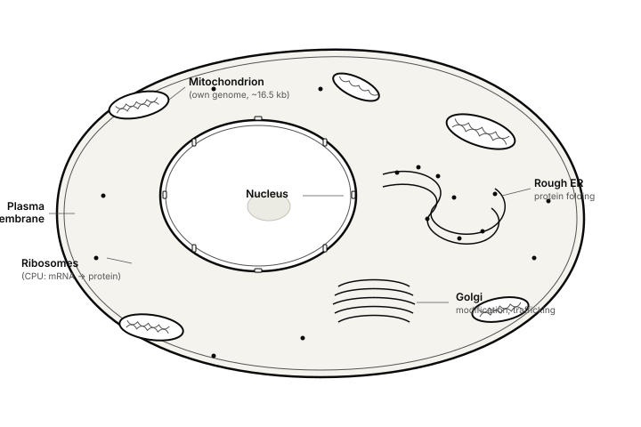
1.3 DNA: structure and language
DNA is a polymer of nucleotides. Each nucleotide has three parts: a deoxyribose sugar, a phosphate group, and a nitrogenous base. Four bases:
| Base | Letter | Pairs with | Chemistry |
|---|---|---|---|
| Adenine | A | T | Purine (double-ring) |
| Thymine | T | A | Pyrimidine (single-ring) |
| Guanine | G | C | Purine |
| Cytosine | C | G | Pyrimidine |
Key structural facts:
- Double helix (Watson & Crick, 1953; with essential data from Rosalind Franklin): two antiparallel strands wound around each other.
- Antiparallel. One strand runs 5'→3', the other 3'→5'. Directionality matters — DNA polymerase only synthesizes 5'→3'.
- Complementary base pairing. A–T share 2 hydrogen bonds, G–C share 3. G–C regions are thermally more stable; this is why GC content matters for PCR primer design and library preparation.
- Chromosomes. Humans have 23 pairs (22 autosomes + XX/XY). Total haploid genome roughly 3.1 billion base pairs.
The term genome refers to the complete set of DNA in a cell. The human genome is ~3.1 Gb haploid, ~6.2 Gb diploid.
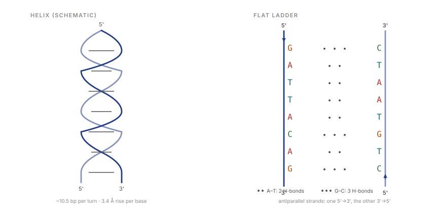
1.4 RNA and proteins
RNA is DNA's single-stranded cousin. Differences:
- Ribose sugar (not deoxyribose).
- Uracil (
U) replaces Thymine. - Usually single-stranded; can fold into complex 3D structures.
Functional RNA types worth naming:
- mRNA — messenger RNA, the transcript that is translated into protein.
- tRNA — transfer RNA, brings amino acids to the ribosome.
- rRNA — ribosomal RNA, structural and catalytic component of ribosomes.
- ncRNA / miRNA / lncRNA — non-coding RNAs; regulate gene expression. The human genome encodes far more regulatory RNA than we once thought.
Proteins are polymers of amino acids (20 canonical ones). The sequence of amino acids (primary structure) determines folding (secondary: α-helices, β-sheets; tertiary: overall 3D shape; quaternary: multi-subunit assemblies). Function follows structure — enzymes, structural proteins, receptors, antibodies, motors.
1.5 Genes and genome organization
A gene is a stretch of DNA that codes for a functional product — usually a protein, sometimes an RNA.
In eukaryotes, genes are discontinuous:
- Exons — the parts that end up in the mature mRNA.
- Introns — intervening sequences, spliced out after transcription.
- UTRs — untranslated regions at the 5' and 3' ends of the mRNA.
- Promoters, enhancers, silencers — regulatory regions that control when and how much a gene is expressed.
Surprising numbers:
- Humans have ~20,000 protein-coding genes (similar count to C. elegans, a 1 mm worm).
- Only ~1–2% of the human genome codes for protein.
- The rest was once called "junk DNA" — we now know much of it is regulatory, structural, or repetitive.
Part 2 · 25 min Central Dogma & the Bioinformatics Pipeline
2.1 The central dogma
Francis Crick, 1958:
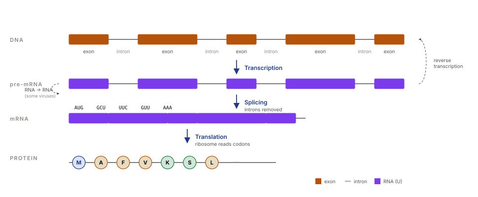
- Transcription. RNA polymerase reads a DNA template strand and synthesizes complementary RNA.
- Splicing (eukaryotes). Introns are removed, exons joined to produce mature mRNA.
- Translation. The ribosome reads mRNA in triplets (codons) and assembles amino acids into a protein, using tRNAs as the dictionary.
Exceptions to the "one-way" flow:
- Reverse transcription (retroviruses like HIV, and some cellular elements): RNA → DNA.
- RNA replication (some viruses): RNA → RNA.
- Prions: protein → protein propagation, with no nucleic acid at all.
2.2 The genetic code
64 possible codons (4³), encoding 20 amino acids plus 3 stop signals. The code is:
- Redundant / degenerate. Most amino acids are encoded by multiple codons. Often the third base is the "wobble" position.
- Nearly universal. Bacteria, plants, and humans use almost the same code. A few exceptions exist in mitochondria and some protists.
- Has a start codon.
AUG(also codes for methionine). - Has three stop codons.
UAA,UAG,UGA.
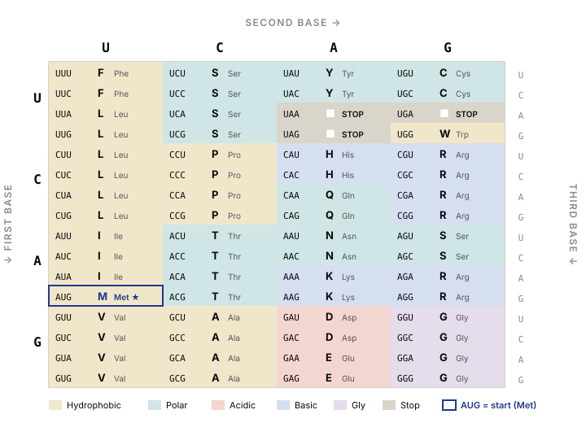
2.3 The end-to-end bioinformatics pipeline
Big-picture map, so you know where the rest of the course fits:
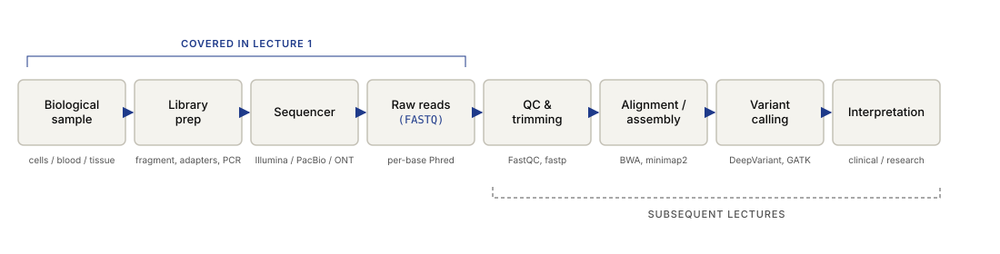
Each arrow is a research community. This lecture covers up through raw reads / FASTQ. Subsequent lectures cover alignment, assembly, variant calling, and downstream analysis.
Part 3 · 40 min Sequencing: From Sanger to the Cost Collapse
3.1 Pre-Sanger
Brief mention only: Maxam–Gilbert sequencing (1976–77) used chemical cleavage at specific bases, read on a gel. Laborious and toxic — hydrazine, DMS. Historically important; obsolete by the mid-80s.
3.2 Sanger sequencing (1977)
Frederick Sanger's chain-termination method. The core trick:
- Set up a DNA synthesis reaction with template DNA, primer, polymerase, and the four dNTPs (A, T, G, C).
- Add a small fraction of ddNTPs (dideoxynucleotides) — these lack the 3'-OH that the next nucleotide needs to attach to. Once incorporated, the chain terminates.
- Each ddNTP is labeled with a different fluorescent dye (in modern capillary Sanger).
- The reaction produces a population of fragments of every possible length, each ending in a known fluorescently labeled base.
- Capillary electrophoresis separates fragments by length with single-nucleotide resolution. A laser reads the fluorescent color as each fragment passes the detector.
- The resulting electropherogram is a 4-channel trace; peak colors give the sequence.
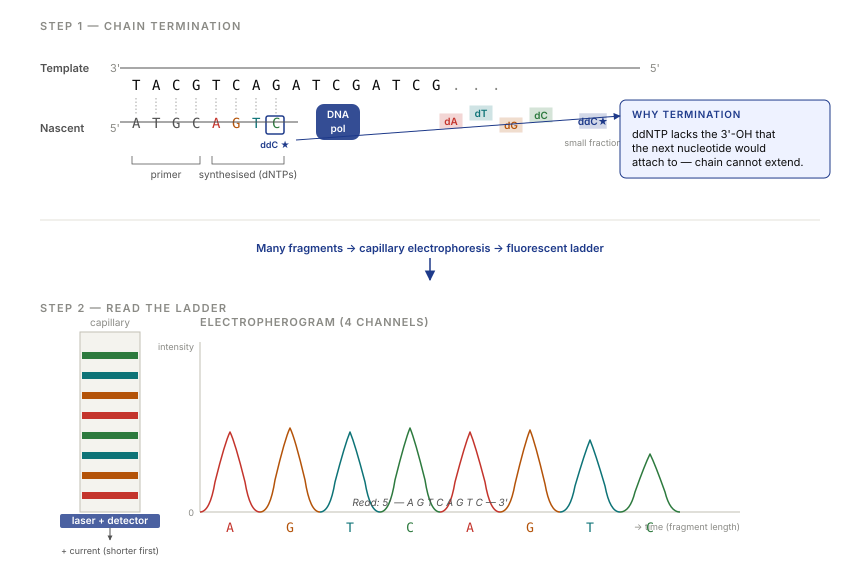
Characteristics:
- Read length. Up to ~800–1000 bp of high-quality sequence.
- Accuracy. Very high — greater than 99.99% per base for good reads.
- Throughput. Low. One read per capillary, ~96 capillaries per run on an ABI 3730xl.
- Still used today for validation, small-scale projects, and plasmid verification. It remains the gold standard reference for base calls.
3.3 PCR — the polymerase chain reaction
Kary Mullis, 1983 (Nobel 1993). The insight: DNA polymerase replicates DNA. If you can separate the strands, prime them, and let the polymerase extend, you can double the DNA. Do it again: quadruple. Repeat 30 times: 2³⁰ ≈ 10⁹× amplification.
Ingredients:
- Template DNA (even a single molecule, in principle).
- Two primers — short oligos flanking the region you want to amplify.
- dNTPs.
- Thermostable DNA polymerase (Taq, from Thermus aquaticus — a hot-spring bacterium). Essential: it survives the 95 °C denaturation step.
Thermal cycle, repeated ~30 times:
- Denature (~95 °C): strands separate.
- Anneal (~55–65 °C): primers bind to their complementary sites.
- Extend (~72 °C): polymerase synthesizes the new strand.
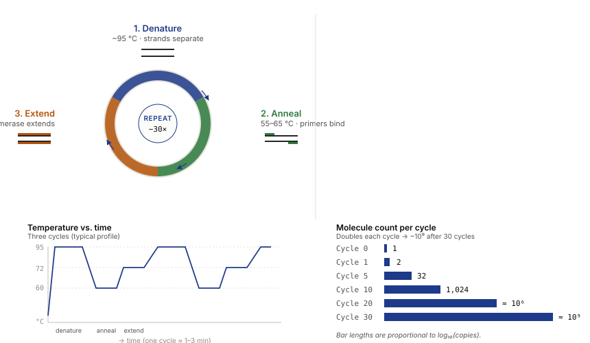
Why PCR matters for the rest of this lecture:
- Every NGS library-prep protocol includes one or more PCR steps.
- "PCR duplicates" are a common artifact that bioinformaticians must filter out.
- Real-time (quantitative) PCR is the workhorse of clinical molecular diagnostics — including the COVID-19 tests everyone has experienced.
3.4 The Human Genome Project
1990–2003. Announced complete draft in 2001, fully (mostly) finished in 2003. First 3 Gb human genome sequenced. Two efforts, famously in competition:
- Public consortium (HGP) — international, publicly funded (~$2.7 billion). Used a clone-based, hierarchical approach: break the genome into large chunks, map them, then sequence each chunk with Sanger.
- Celera Genomics (Craig Venter) — private, aimed to sequence faster using whole-genome shotgun: shred the whole genome into small pieces, sequence them all, reassemble computationally.
Both worked. Both were published back-to-back (Nature and Science) in Feb 2001.
Consequences:
- Established the reference human genome still used today (with updates — GRCh37/hg19, GRCh38/hg38, and now T2T-CHM13, the first truly telomere-to-telomere human assembly, 2022).
- Catalyzed the genomics industry.
- Made it clear that Sanger sequencing at genome scale was not sustainable at the cost. The race for cheaper methods began immediately.
3.5 Moore's Law vs. the genome cost curve
This is one of the most dramatic plots in all of technology history.
The NHGRI (National Human Genome Research Institute) has tracked cost-per-genome from 2001 to present. Key data points (approximate, USD):
| Year | Cost per genome | Notes |
|---|---|---|
| 2001 | ~$100,000,000 | HGP-era Sanger |
| 2007 | ~$10,000,000 | Early NGS emerging |
| 2008 | ~$1,000,000 | Illumina GA, SOLiD |
| 2010 | ~$50,000 | HiSeq 2000 |
| 2014 | ~$1,000 | HiSeq X "1000-dollar genome" |
| 2022 | ~$200 | NovaSeq, DNBSEQ |
| 2024 | ~$100 | NovaSeq X, Ultima |
Plotted on a log scale, cost per genome fell faster than Moore's Law from roughly 2008 onward, when second-generation (NGS) instruments became mainstream. Moore's Law predicts ~2× improvement every 18–24 months; sequencing improved ~10× per year for several years.
3.6 The rise of consumer genomics
When a test drops from $100M to $100, the business model changes. A few companies to know:
23andMe (2006–)
- Direct-to-consumer ancestry + health reports.
- Technology caveat. 23andMe does not sequence your genome. It uses a SNP genotyping array — reading ~600,000 pre-selected common variants, not your full sequence. Cheaper (~$100–200) but covers less than 0.02% of your DNA.
- FDA briefly banned its health reports in 2013; since reinstated under restrictions.
- 2023 data breach. A credential-stuffing attack exposed data on ~7 million users, including relative-matching profiles. A cautionary tale about genomic data security.
- 2024–2025. The company entered bankruptcy; acquired by founder Anne Wojcicki's nonprofit. The future of its ~15M-customer database is unresolved.
Dante Labs (2016–)
- Offers actual whole-genome sequencing (WGS) direct-to-consumer — typically 30× coverage Illumina short-read, sometimes long-read add-ons.
- Price range: historically $300–1000+.
- Customer receives raw FASTQ / BAM / VCF files — exactly what bioinformaticians know how to work with. An interesting accessibility milestone.
Nebula Genomics (2016–)
- Founded by George Church (Harvard). Pitched blockchain-based privacy and data ownership. WGS at consumer prices.
- Operations have wound down substantially as of 2024.
Ancestry, MyHeritage, FamilyTreeDNA
All genotyping-array-based (like 23andMe), ancestry-focused.
Key conceptual distinction to hammer home:
- Genotyping (SNP array). Reads pre-chosen variant positions. Cheap, fast, limited.
- Sequencing (WGS / WES). Reads the actual sequence. More expensive, generates orders of magnitude more data, finds novel variants.
Part 4 · 40 min Illumina / NGS in Detail
4.1 Overview
Illumina's technology is called sequencing-by-synthesis (SBS) with reversible terminators. The basic idea:
- Immobilize millions of DNA fragments on a flow cell.
- Amplify each fragment in place to form a "cluster" of ~1000 identical copies (signal amplification).
- Cycle through: add all four fluorescently labeled, reversibly-terminated nucleotides → let one incorporate → image → cleave the terminator and fluorophore → repeat.
- Each cycle adds one base to every cluster. The imaging tells you which base was added where.
4.2 Library preparation
Before a sample touches the sequencer, it's converted into a "library":
- Fragmentation. Break genomic DNA into pieces of desired size (~300–500 bp for standard short-read). Methods: sonication (Covaris), enzymatic (tagmentation with Tn5 transposase — Nextera kits).
- End repair & A-tailing. Blunt the fragment ends, add a single A overhang.
- Adapter ligation. Ligate adapter sequences onto both ends. Adapters contain:
- Sequences complementary to flow-cell oligos (so fragments can bind).
- Sequencing primer sites.
- Index / barcode sequences — so you can pool multiple samples in one run (multiplexing).
- PCR amplification. Enrich for adapter-ligated fragments; add sample indices if not already present.
- Size selection. AMPure beads or gel, to narrow the fragment size distribution.
- QC. Bioanalyzer / TapeStation + qPCR to verify library concentration and size.
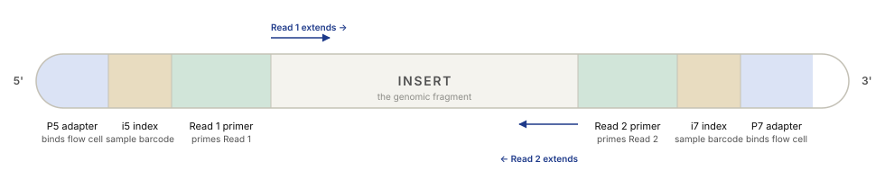
4.3 Cluster generation — bridge amplification
The flow cell is a glass slide with billions of short oligos covalently bound to its surface — two kinds, complementary to the P5 and P7 adapters.
- Seeding. Library is flowed over the cell. Each fragment hybridizes to a surface oligo by its P5 or P7 end.
- First extension. The surface oligo is used as a primer; polymerase extends, creating a covalently attached copy. The original template is washed away.
- Bridge formation. The free end (P7 or P5) bends over and hybridizes to a nearby surface oligo of the complementary type.
- Bridge amplification. Polymerase extends the bridge. Denaturation separates them. Now two covalently attached copies, close together.
- Repeat ~35 cycles. Exponential clonal amplification produces a cluster of ~1000 identical copies, all localized to a ~1 μm spot on the flow cell.
- Linearization. One of the two strand types is cleaved and washed away, leaving a cluster of single-stranded DNA all in the same orientation, ready for sequencing.
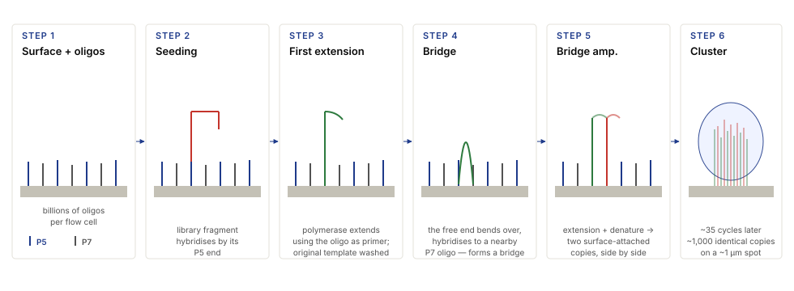
Why clusters? Single-molecule fluorescence would be too dim to image reliably. A cluster of 1000 copies gives a bright, diffraction-limited spot the camera can see.
4.4 Sequencing by synthesis
Each cycle:
- Add a mix of all four dNTPs. Each is labeled with a different fluorescent dye and carries a reversible 3' blocker, so only one can be incorporated per cycle.
- Polymerase extends each cluster's strand by exactly one base.
- Wash away unincorporated nucleotides.
- Image the flow cell in 4 channels (4-channel chemistry — HiSeq, MiSeq) or 2 channels (NextSeq, NovaSeq — faster and cheaper with clever color encoding).
- Chemically cleave the fluorophore and the 3' blocker.
- Repeat for N cycles (where N = desired read length, e.g., 150).
Two-channel chemistry
On NextSeq / NovaSeq only two dyes are used. Bases are distinguished by which channels they appear in:
T: red only.C: green only.A: red + green (both).G: no color (dark).
This halves imaging time and reduces cost. But "dark G" can be confused with a missing base — a source of characteristic 2-channel error.
Paired-end sequencing
After Read 1, the cluster is re-synthesized from the other end (through a "turnaround" step) and Read 2 is sequenced from the opposite direction. You get two reads per fragment — powerful for alignment (they bracket an "insert" of known approximate size) and for resolving repeats.
4.5 Imaging, base calling, and error profile
The sequencer is, physically, a fluorescence microscope with:
- Lasers at the relevant excitation wavelengths.
- A motorized stage that scans the flow cell in tiles.
- A CCD or CMOS sensor.
- Real-time analysis (RTA) software that processes images to produce base calls and quality scores on the fly.
The base-calling pipeline:
- Image registration. Align images across cycles (the stage isn't perfectly repeatable).
- Cluster identification. Find spots in the first few cycles.
- Intensity extraction. Measure per-cluster fluorescence in each channel, each cycle.
- Crosstalk correction. The four dyes have overlapping emission spectra; a 4×4 correction matrix unmixes them.
- Phasing correction. In each cluster, a few percent of molecules "lag" (didn't incorporate this cycle) or "lead" (read through the terminator). This contamination accumulates and is corrected statistically.
- Base call + quality score. The cleanest channel wins; the quality score reflects how clean.
Error profile:
- Substitution errors dominate (~0.1–1%). Indels are rare.
- Quality degrades along the read, especially after ~100–150 cycles, due to phasing accumulation.
- GC-bias. Extreme GC-content regions amplify poorly in PCR and cluster generation, producing coverage dropouts.
4.6 Platforms & use cases
| Platform | Output | Read length | Typical use |
|---|---|---|---|
| MiSeq | 15 Gb / run | 2×300 bp | Small genomes, amplicons, 16S, validation |
| NextSeq 2000 | 360 Gb / run | 2×150 bp | Mid-scale WGS, exomes, transcriptomes |
| NovaSeq X | up to 16 Tb / run | 2×150 bp | Population-scale WGS — the workhorse |
| iSeq 100 | 1.2 Gb / run | 2×150 bp | Benchtop, small-scale |
Competitors worth naming:
- MGI / BGI / Complete Genomics (DNBSEQ). Similar SBS-style chemistry with "DNA nanoballs" instead of bridge-amplified clusters. Price-competitive; significant market share outside the US.
- Element Biosciences (AVITI). Rolling-circle amplicon chemistry with avidity-based base calling. Newer entrant, 2023+.
- Ultima Genomics. Single-end, massive-scale, unconventional open flow cell. Targets $100 genomes.
Part 5 · 30 min Long-Read Sequencing
5.1 Why long reads?
Illumina reads are typically 150 bp. The human genome has repeat elements 10 kb+ long. Short reads are ambiguous across long repeats — you can't tell which copy of a repeat a read came from.
What long reads enable:
- Resolving structural variants (inversions, duplications, translocations, large insertions) — especially important in cancer and Mendelian disease.
- Haplotype phasing — knowing which variants are on the same chromosome copy.
- De novo assembly of genomes without a reference.
- Direct detection of DNA modifications — methylation — without additional chemistry.
- Full-length transcript sequencing — resolving isoforms in RNA-seq.
Trade-off: historically, long reads had much higher per-base error rates. That gap has narrowed dramatically — PacBio HiFi is now competitive with Illumina on accuracy.
5.2 PacBio SMRT sequencing
Pacific Biosciences. SMRT = Single Molecule, Real Time. The core trick is a zero-mode waveguide (ZMW):
- A ZMW is a hole ~70 nm in diameter in a thin metal film on a glass slide.
- Light at visible wavelengths cannot propagate into a hole that small (it's below the cutoff wavelength). But an evanescent field extends ~20–30 nm in.
- Fix a single DNA polymerase at the bottom of each ZMW. Only fluorescence from molecules near the polymerase (within the evanescent field) is detected. Everything above, in bulk solution, is dark.
- Flow in fluorescently labeled nucleotides. As the polymerase incorporates each one, the fluorophore sits in the illuminated zone for milliseconds — long enough to be detected — then is cleaved off.
- You directly observe nucleotide incorporation in real time.
Characteristics:
- Read length. 10–25 kb typical, up to 100 kb+.
- Error. Raw reads have ~10–15% random error. But PacBio HiFi mode circularizes short templates so the polymerase reads the same molecule repeatedly (~10+ passes); the consensus (CCS — circular consensus sequencing) is >99.9% accurate.
- Throughput. Revio system, multi-Gb / run.
- Kinetic signal. The time between incorporations carries information — base modifications (e.g., m6A, 5mC) alter kinetics and can be detected directly.
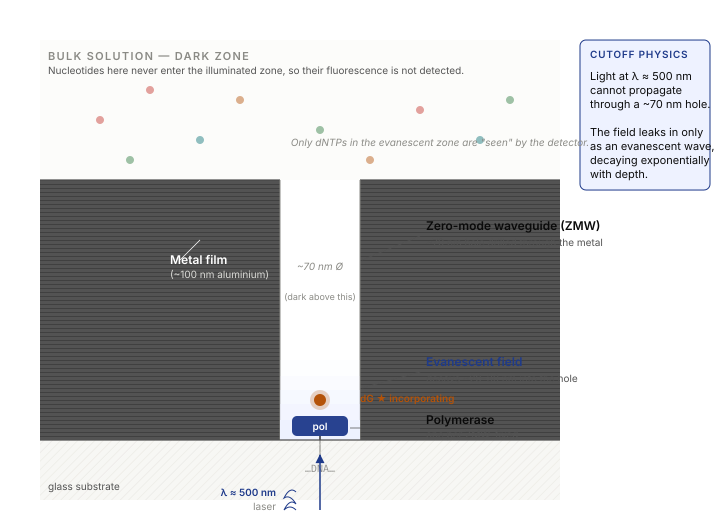
5.3 Oxford Nanopore sequencing
Oxford Nanopore Technologies (ONT). The most EE-native platform in all of biology.
The device:
- A membrane with protein nanopores embedded in it (engineered pores based on bacterial porins).
- Apply a voltage across the membrane. Ions flow through the pore, creating a measurable ionic current (~100 pA).
- Feed single-stranded DNA through the pore. The bases inside the pore partially block the ion flow — the current drops to a level characteristic of the bases currently in the narrow constriction.
- Record the current over time. The signal is called a squiggle.
- A motor protein attached to the pore controls the translocation rate (~400 bases / sec currently).
The catch: at any moment, 5–6 bases sit in the constriction simultaneously, all contributing to the current level. So the signal is an overlapping k-mer code, not one-base-at-a-time.
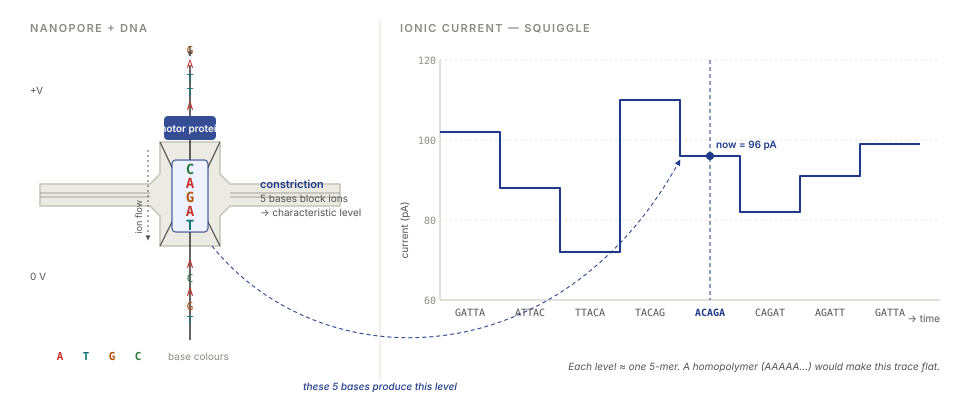
Basecalling
- This is a sequence-to-sequence machine learning problem: ionic current time series → base sequence.
- Modern basecallers (Dorado, Bonito) are transformer- or RNN-based neural networks, trained on known references.
- Running the basecaller typically requires a GPU.
Characteristics:
- Read length. Typical 10–50 kb, ultra-long protocols routinely 100 kb+, record reads >4 Mb.
- Error. Current high-accuracy basecalling gives ~99% per-base. Historically error was insertion/deletion-biased, especially in homopolymers (runs of the same base).
- Throughput. MinION (USB stick, ~$1000) generates ~10–30 Gb / run. PromethION generates multi-Tb / run.
- Form factor. Uniquely portable. Deployed on research ships, in remote field stations, and on the International Space Station (Kate Rubins, 2016).
- Direct RNA sequencing. Unlike other platforms, ONT can sequence native RNA directly, preserving modifications.
5.4 Error profile comparison
| Platform | Read length | Raw error | Consensus error | Error type |
|---|---|---|---|---|
| Sanger | ~800 bp | <0.1% | — | Random, low |
| Illumina | 150–300 bp | ~0.1–1% | — | Substitutions; quality drops late in read |
| PacBio CLR | 10–25 kb | ~10–15% | — | Random |
| PacBio HiFi (CCS) | 10–25 kb | — | <0.1% | Effectively Sanger-like, at scale |
| ONT (latest) | 10 kb–Mb | ~1–5% | <0.1% (duplex / consensus) | Indels, homopolymers historically |
Key conceptual point: error rate per read is not the same as error rate after consensus. Both PacBio HiFi and ONT duplex sequencing achieve Illumina-grade accuracy at long read lengths.
Part 6 · 25 min FASTQ File Format
6.1 The 4-line record
Raw reads from any modern sequencer are delivered in FASTQ format. One read equals exactly four lines:
@SEQ_ID optional description GATTACAGATTACAGATTACAGATTACA + !''*((((***+))%%%++)(%%%%).1
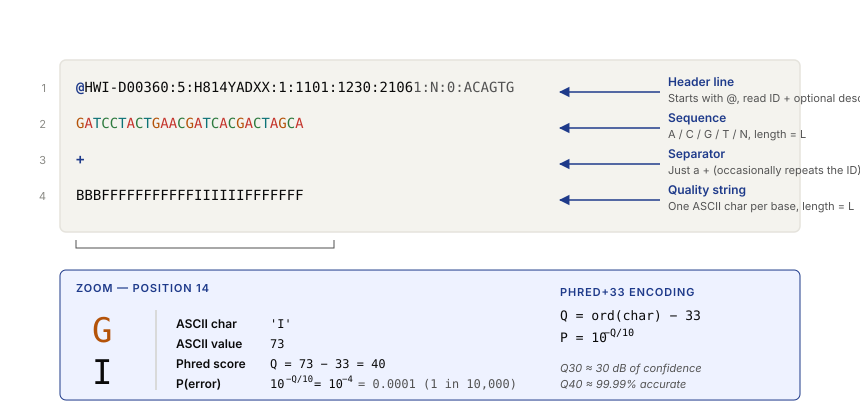
I at position 14 through the Phred+33 encoding all the way to an error probability of 1 in 10,000.Line by line:
@followed by the read identifier, and optional whitespace-separated description.- The raw sequence (A / C / G / T / N only, one character per base).
+optionally followed by the same ID (usually just+alone).- Quality string — one ASCII character per base, same length as the sequence.
Files are usually gzip-compressed (.fastq.gz or .fq.gz). Large files are routinely 10–100 GB compressed.
6.2 Phred quality scores
Each quality character encodes a Phred quality score Q, relating to the probability P that the base call is wrong:
Equivalently:
Common values:
| Q | Perror | Interpretation |
|---|---|---|
| 10 | 10% = 1 in 10 | Poor |
| 20 | 1% = 1 in 100 | OK |
| 30 | 0.1% = 1 in 1,000 | Good ("Q30") |
| 40 | 0.01% = 1 in 10,000 | Excellent |
| 50 | 0.001% = 1 in 100,000 | PacBio HiFi / Sanger-grade |
Illumina targets %Q30 > 85% as a run-quality metric — meaning 85%+ of bases have Q ≥ 30.
6.3 ASCII encoding
The quality character encodes the score as ASCII_value − offset. There are historical dialects:
- Phred+33 (modern standard — all current Illumina, PacBio, ONT output).
Q = ord(char) − 33. Characters!(33) through~(126) encode Q 0–93. - Phred+64 (Solexa / early Illumina, ~2004–2011).
Q = ord(char) − 64. Obsolete, but you'll still encounter old data.
Example: the character I has ASCII value 73. In Phred+33: Q = 73 − 33 = 40.
6.4 Quality control and trimming
Before any analysis, reads should be QC'd:
- FastQC — standard QC tool. Produces an HTML report: per-base quality, per-sequence quality, GC distribution, adapter content, duplication levels, overrepresented sequences.
- Adapter trimming — remove leftover adapter sequences from reads that sequenced all the way through the insert. Tools:
cutadapt,trim_galore,fastp. - Quality trimming — trim low-quality tails (common at the 3' end of Illumina reads).
- Length filtering — drop reads shorter than a threshold post-trimming.
6.5 Hands-on parse
Project this record on the board and work through it together:
@HWI-D00360:5:H814YADXX:1:1101:1230:2106 1:N:0:ACAGTG GATCCTACTGAACGATCACGACTAGCA + BBBFFFFFFFFFFFIIIIIIFFFFFFF
Walk-through:
- Read ID decoded:
HWI-D00360instrument, run 5, flow cellH814YADXX, lane 1, tile 1101, coords (1230, 2106), paired read 1, not filtered, indexACAGTG. - Length: 27 bases.
- Quality characters → Phred+33 scores:
B=33,F=37,I=40 — most bases are Q33–40. - Lowest quality in this record:
B= Q33 ≈ 0.05% error.
Wrap-up · 10 min Takeaways, homework, and next lecture
What you should take away
- DNA → RNA → Protein is the information spine of biology. Sequencing reads the first link.
- Sequencing is an instrumentation + signal-processing problem. The field's progress has been driven by engineering as much as biology.
- The cost collapse (from $100M to $100 in 20 years) is what made modern bioinformatics, and consumer genomics, exist.
- Illumina dominates short-read; PacBio and ONT dominate long-read. They solve different problems.
- Raw data = FASTQ. Quality = Phred = dB. Learn to read it.
Next lecture
Read alignment and genome assembly: BWA, minimap2, de Bruijn graphs, and the theoretical limits of short-read assembly.
Homework
- Download a small FASTQ file (e.g., an SRA sample, or a provided subset).
- Write a Python or MATLAB script that:
- Parses the FASTQ without using Biopython.
- Computes the mean quality per read.
- Plots the mean quality as a function of position along the read.
- Answer: at what read position does quality start to drop off, and why?
Recommended reading
- Molecular Biology of the Cell — Alberts et al. (Chapters 4–6).
- Metzker, M. L. (2010). Sequencing technologies — the next generation. Nature Reviews Genetics 11, 31–46.
- Goodwin, McPherson & McCombie (2016). Coming of age: ten years of next-generation sequencing technologies. Nature Reviews Genetics 17, 333–351.
- Mantere, T., Kersten, S., & Hoischen, A. (2019). Long-read sequencing emerging in medical genetics. Frontiers in Genetics 10, 426.
- NHGRI Genome Sequencing Program cost data: genome.gov/sequencing-cost.
Appendix — timing summary
| Block | Time | Cumulative |
|---|---|---|
| Part 1 — Biology | 45 min | 0:45 |
| Part 2 — Central Dogma | 25 min | 1:10 |
| Part 3 — History + Cost | 40 min | 1:50 |
| Part 4 — Illumina | 40 min | 2:30 |
| Part 5 — Long-read | 30 min | 3:00 |
| Part 6 — FASTQ | 25 min | 3:25 |
| Wrap-up | 10 min | 3:35 |
Total: ~3h 35min of content. Slide Part 1 depth up or down depending on students' biology background.